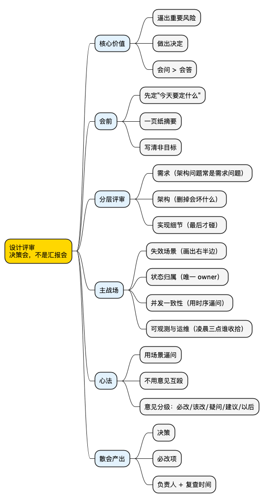

职场工具箱之设计评审：它是一场决策会，不是一场汇报会
Posted on 五 16 10月 2026 in Life
| Abstract | 职场工具箱之设计评审 |
|---|---|
| Authors | Walter Fan |
| Category | 职场方法论 |
| Version | v1.0 |
| Updated | 2026-10-16 |
| License | CC-BY-NC-ND 4.0 |
短大纲（给忙人）
展开看看
- 痛点：评审会开成了作者单向念文档、评审人点头的"汇报会"，散会什么决定都没落下
- 本质差距：新手把评审当"展示我做得对"，老手把评审当"逼出重要风险、做出决定"
- 一句话：好的设计评审是一场决策会，不是一场演示会
- 会前：先定"今天要定什么",写一页纸摘要，评审人三分钟看懂
- 分层评审：先问需求，再看架构，别一上来就钻实现——大量"架构问题"其实是"需求问题"
- 主战场：失效场景、状态归属、并发一致性、运维恢复——这几处才真正出事
- 一个反直觉的招：用具体场景逼问，不用抽象意见互殴（"Redis 在转接途中挂了，你一步步说清会怎样"）
- 把意见分级：必改 / 该改 / 疑问 / 建议 / 以后再说，别让真问题被"我不喜欢这个类名"淹没
- 散会产出：决策 + 必改项 + 负责人 + 复查时间，否则刚才开的是讨论不是评审
- 落地：会前自查、会中追问、散会模板，三张能直接抄的清单
先来一个扎心场景
评审会开了一个小时。作者对着设计文档从第一页念到最后一页，PPT 翻得飞快，中间偶尔停下来问一句"大家有问题吗？"没人吭声。评审人里资历最老的那位点了点头，说了句"思路挺清楚的，可以。"到点散会，大家觉得今天认真讨论过了。
过了两周，这个方案上线。某天机房专线抖了几秒，系统在网络分区时出现了两个"主"同时写数据，下游的账算乱了，半夜被叫起来救火。
复盘会上，有人把那份设计文档翻出来——从头到尾，没有一个字写"网络分区时怎么办"。更尴尬的是，那场评审会的聊天记录里，也没有一个人问过这句话。
你可能会替评审人委屈："文档作者没写，我们怎么知道要问？"
问题恰恰在这。这场评审从一开始就开错了方向——它是一场汇报会：作者负责讲，评审人负责听，谁讲得顺、PPT 做得漂亮，就算过。而真正该出事的失效分支，作者自己都没想到，于是整个房间里也没人去逼他想。
新手和老手对"设计评审"的理解，差的不是技术，是这件事到底是来干嘛的。
- 新手觉得：评审是"我来证明我这个方案做得对"。于是他把能讲的都讲了，不能讲的（没想清楚的）悄悄跳过。
- 老手觉得：评审是"我们一起把这个方案里最可能出事的地方挖出来，然后做个决定"。于是他专挑作者讲得含糊的地方往死里问。
今天介绍一个我自己用了很多年的工具——把设计评审开成一场决策会。
好的设计评审是一场决策会，不是一场演示会。 它的产出不是"我们讨论过了",而是一组决定、一串必改项、每一项都有负责人。
下面会用一条贯穿全文的例子——在多个 FreeSWITCH 节点之间维护分布式呼叫状态——把每个抽象原则落到一个能想象的场景上。不写后端也没关系，把"呼叫状态"换成你手头任何一份"多方都要用的数据"，道理一样。
汇报会 vs 决策会：问题到底出在哪
先来一张对比表，你感受一下差距。
| 维度 | 汇报会（评审常见的样子） | 决策会（我们要的样子） |
|---|---|---|
| 会前准备 | 作者埋头做 PPT | 先发一句"今天要定什么" |
| 开场第一句 | "我来给大家讲一下方案" | "我们今天要决定 A 还是 B" |
| 评审人状态 | 被动听，顺着作者的节奏 | 带着问题来，专挑含糊处追问 |
| 花时间最多的地方 | 方案怎么跑、UML、类名 | 怎么坏、谁拥有状态、并发一致性 |
| 意见形态 | "我觉得这样不太好" | "Redis 在转接途中挂了，你走一遍" |
| 散会时手里有什么 | "大家都懂了" | 决策 + 必改项 + 负责人 + 复查时间 |
你发现没有：汇报会的核心毛病不在"讲错了",而在"它根本没打算做决定"。 作者讲完、大家没意见，就算过——而"没意见"往往不是方案真没问题，是没人知道该往哪儿问。
决策会就是给评审装一个"强制出结论"的结构：会前逼出"要定什么",会中逼出"怎么坏",散会逼出"定了什么、谁去改"。
1) 会前：先定"今天要定什么"
评审会最大的浪费，是开到一半才发现大家对"今天要解决什么"理解不一样。所以会前第一件事，不是做 PPT，是把下面几个问题写下来发给所有人：
- 我们需要做一个什么决定？
- 我们在解决什么问题？
- 哪些约束是硬的？
- 最大的不确定性在哪？
- 需要评审人给什么反馈？
拿呼叫状态这个例子，一个像样的会前通知长这样：
我们要决定：新的呼叫状态服务，用 Redis Cluster 还是 MySQL 存活动呼叫状态。硬约束是单节点故障不能丢活动呼叫、支持 1 万路并发、状态传播延迟低于 500ms。想听大家对失效场景和一致性要求的意见。
对比常见的那句"今天我来给大家讲一下新服务的架构"——前者一发出去，评审人就知道该带着什么脑子来；后者只能让人被动地听。
会前问题写不清楚，这个会基本可以不开——因为连"做完算成功"都没定义。
一页纸摘要：让评审人三分钟看懂
设计文档可以很长，但开头必须有一页纸。我习惯放在文档最前面：
# 设计评审：分布式呼叫状态
## 问题
在多个 FreeSWITCH 节点之间维护呼叫状态。
## 目标
- 单个节点故障时活动呼叫不丢
- 支持 1 万路并发
- 状态传播延迟 < 500ms
## 非目标
- 持久化呼叫历史（那是另一个系统的事）
- 跨地域复制
## 方案
FreeSWITCH → 呼叫状态服务 → Redis Cluster
Redis 是活动呼叫状态的唯一真相来源，TTL 自动过期。
## 主要风险
Redis 不可用 / 主节点挂 / 网络分区 / 状态重复更新
## 待定问题
- 真正需要的一致性级别是什么？
- Redis 分区时到底怎么办？
"非目标"这一栏，比"目标"更能省时间。 它直接挡掉了"那历史记录怎么存""要不要支持跨地域"这类会把评审带偏半小时的问题。边界画清楚，评审人才知道哪些事今天不用操心。
2) 分层评审：别一上来就钻实现
拿到方案别急着看代码结构和类名。我习惯从外往里分三层，顺序不能倒。
| 层 | 问什么 | 一个好用的问题 |
|---|---|---|
| 第一层：需求 | 要做什么？规模多大？延迟？可用性？什么数据绝不能丢？ | "这个约束是业务真要求的，还是我们自己猜的？" |
| 第二层：架构 | 职责清不清？依赖必要吗？状态边界在哪？同步还是异步？ | "如果我把这个组件删掉，会坏什么？" |
| 第三层：实现 | 具体怎么写 | （前两层站稳了再碰） |
第一层特别值钱，因为有相当比例的"架构问题"其实是"需求问题"。 比如有人花三天争论 Redis Cluster 的拓扑怎么摆，争到最后发现——业务上根本不要求活动呼叫在节点故障时不丢，只要求 30 秒内自愈。需求一改，整个方案的复杂度塌掉一大半。
第二层那个"删掉会坏什么"的问题，专治"顺手加的组件"。 如果没人能说清某个组件为什么存在，它八成就是个坏味道。
很多评审的毛病是跳过前两层直接扎进第三层——于是你在为一个需求都没对齐的方案抠实现细节，抠得再细也是白抠。
3) 主战场：把大部分时间花在"怎么坏"上
这是整场评审里单位时间价值最高的部分，值得花掉一半以上的时间。
别只问"它是怎么工作的？"，要问 "它是怎么坏的？"
把呼叫状态这个例子里能坏的地方列成一张表，挨个问"预期行为是什么":
| 失效 | 预期行为 |
|---|---|
| Redis 不可用 | 新呼叫还能建立吗？已有呼叫怎么办？ |
| Redis 主节点挂 | 多久恢复？恢复期间状态在哪？ |
| 网络分区 | 哪一侧继续服务？另一侧怎么办？ |
| 服务崩溃重启 | 状态怎么恢复？从哪恢复？ |
| 同一请求重复到达 | 操作幂等吗？ |
| 依赖返回 500 | 重试？超时？熔断？ |
对分布式系统，我会要求把失效分支画出来，而不是用一句"我们有降级"带过。下面这张图把一次呼叫状态写入拆成两支——

左半边（Redis 正常）通常画得清清楚楚；右半边（Redis 不可用）往往只有一句"降级处理"甚至一片空白。
如果设计图的右半边没有定义，这个设计就还没写完。
"降级"不是一个行为，它是一个占位符。追一句：降级到底是拒绝新呼叫、本地内存先顶着、还是挂起等恢复？这三种选法对用户的影响完全不同，作者必须选一个，并说清为什么。
顺带两件最常被忘的事：状态归属、并发一致性
对后端系统，有一个问题我每次都会问：这份状态谁拥有？谁被允许改？

上半部分是危险的写法：呼叫服务、转接服务、清理任务三家都直接写同一份状态。评审时看到这种图，基本可以预定一个线上故障——三个写入方的时序谁都说不清，并发一改就打架，出了问题根本不知道该去哪个服务排查。下半部分是我偏好的写法：只有一个 owner 能写，其余组件通过读、事件、API 三种只读方式拿数据。
这个约束性价比极高：改一页设计文档的成本是几页纸，上线后再把三个写入方收敛成一个，成本是一次数据迁移外加一串线上事故。
并发一致性别只问抽象概念（作者会条件反射答"最终一致""有重试"），要用具体时序逼出来：
更新 A：version=10 更新 B：version=11
网络乱序，B 先到，A 后到。
没有版本检查：最终存下 version=10 ❌（新的被旧的覆盖）
有版本检查： A 到达时发现已是 11，拒绝 ✓
这个两行场景，比"系统是最终一致的"这句话有用一百倍——它直接暴露出：没有版本号，乱序就会让旧状态覆盖新状态。
4) 一个反直觉的招：用场景逼问，不用意见互殴
这可能是你能对评审做的最大一处改进。把"互相表达意见"换成"用场景逼对方把设计走一遍"。
| 别说（意见） | 要问（场景） |
|---|---|
| "我觉得 Redis Cluster 够可靠了。" | "一路呼叫正在转接，这时 Redis 节点 A 挂了。你一步步说清接下来会发生什么。" |
| "重试机制应该没问题。" | "请求到了服务端，服务端提交了操作，但响应在回程丢了。客户端重试。会发生什么？" |
| "这是最终一致的。" | "可接受的最大陈旧时间是多少？如果它陈旧了 30 秒，会发生什么？" |
意见会互相顶，场景不会——具体场景会逼着架构自己把底牌亮出来。 一个答不清"Redis 挂在转接途中会怎样"的方案，它自己就暴露了没想清楚的地方，根本不需要你去跟作者争"Redis 到底好不好"。
这也是整个工具里最重要的心法：评审的高手，赢在会问，不在会答。
5) 把评审意见分级，别让噪声淹没信号
所有意见，强制分到五档：
- 🔴 必改：正确性、安全、可靠性或根本性架构问题。不改不能上。
- 🟠 该改：明显风险，但不足以否定整个方案。
- 🟡 疑问：评审人没看懂，需要作者解释。
- 🔵 建议：可改进，但不强制。
- 🟢 以后再说：有意思，但不是现在该做的。
不分级的评审会最容易变成这样：有人花十分钟争论"这个类名起得不好"（🔵），而一个真正的分布式一致性问题（🔴）被埋在底下没人深究。分级逼着所有人先把 🔴 和 🟠 过一遍。
评审的价值不在意见多，在于让最重要的意见不被噪声盖住。
6) 会要短，产出要硬
一场常规的架构评审，我大致这样切时间：
5 分钟 问题 + 需求
5 分钟 方案概述
10 分钟 架构
20 分钟 风险 + 失效场景
10 分钟 备选 / 取舍
10 分钟 待定问题 + 决策
最后 10 分钟极其重要。 一场评审开完，如果没有落下这几样东西，那你刚才开的是讨论，不是评审：
决策： 通过 / 带修改通过 / 不通过
必须改： 1. ... 2. ...
待定： 1. ... 2. ...
负责人： Alice → 第 1 项 Bob → 第 2 项
复查： 10 月 23 日
没有这块，散会后一个月，谁都不记得当时到底定了什么、谁该改什么。
行动清单：下次开评审会，照着这三张表走
会前自查（讲方案的人，先过一遍）
- [ ] 能用一句话说清解决什么问题吗？"非目标"写了吗？
- [ ] 规模、延迟、可用性、绝不能丢的数据，都量化了吗？
- [ ] 每个组件删掉会坏什么？答不上来的组件删掉
- [ ] 设计图的"右半边"（各种坏法）都画出来了吗？
- [ ] 每份重要状态的 owner 唯一吗？谁被允许改，标清楚了吗？
- [ ] 并发、乱序、重复、幂等，各有没有具体时序走过一遍？
- [ ] 部署、回滚、扩容、数据恢复，各有没有方案？
会中追问（评审的人，逐条拷问）
- [ ] 我们在解决真问题，还是在解决一个"看起来很酷"的问题？
- [ ] 凡出现"应该 / 大概 / 一般来说",追一句"怎么知道的"
- [ ] 每个失效场景，追一句"然后呢",直到答案落到一个具体行为
- [ ] 每份状态，追一句"谁拥有、谁被允许改"
- [ ] 凌晨三点它挂了，on-call 有没有一条清楚的路？
提问纪律（守不住，拷问就变抬杠）
- [ ] 一次只问一个问题，问完闭嘴等回答
- [ ] 对事不对人，review 的是设计不是能力
- [ ] 顺着答案追问，而不是冷笑审判
- [ ] 允许并鼓励"我这块还没想清楚",把已知和未知分开
总结：把评审从"念文档"开成"做决策"
把这个工具收一下：
| 环节 | 核心动作 | 避免什么 |
|---|---|---|
| 会前 | 先定"今天要定什么"+ 一页纸摘要 | 别埋头做 PPT |
| 分层 | 先问需求，再看架构，最后碰实现 | 别一上来就钻细节 |
| 主战场 | 失效场景 / 状态归属 / 并发一致性 / 运维 | 别只问"怎么跑" |
| 心法 | 用场景逼问，用分级聚焦 | 别用抽象意见互殴 |
| 散会 | 决策 + 必改项 + 负责人 + 复查 | 别开成"大家都懂了" |
一句话
一场评审开完，如果产不出"通过 / 带修改通过 / 不通过"加一串负责人，那你刚才开的是讨论，不是评审。
下次开评审会，别急着让作者从头念文档，也别急着夸方案漂亮。先把"今天要定什么"摆到桌面上，然后挑一个最可能出事的场景，安安静静地问一句："这时候它怎么坏？" 真到方案越讲越复杂时，再狠一点，问一句："凌晨三点它挂了，谁来收拾？" 答得上来，这个方案才算经得起评审。
最后给你一张思维导图，方便收藏：
@startmindmap
<style>
mindmapDiagram {
node {
BackgroundColor #FAFAFA
}
:depth(0) {
BackgroundColor #FFD700
}
:depth(1) {
BackgroundColor #E3F2FD
}
:depth(2) {
BackgroundColor #F5F5F5
}
}
</style>
* 设计评审\n决策会，不是汇报会
** 核心价值
*** 逼出重要风险
*** 做出决定
*** 会问 > 会答
** 会前
*** 先定"今天要定什么"
*** 一页纸摘要
*** 写清非目标
** 分层评审
*** 需求（架构问题常是需求问题）
*** 架构（删掉会坏什么）
*** 实现细节（最后才碰）
** 主战场
*** 失效场景（画出右半边）
*** 状态归属（唯一 owner）
*** 并发一致性（用时序逼问）
*** 可观测与运维（凌晨三点谁收拾）
** 心法
*** 用场景逼问
*** 不用意见互殴
*** 意见分级：必改/该改/疑问/建议/以后
** 散会产出
*** 决策
*** 必改项
*** 负责人 + 复查时间
@endmindmap

系列回顾
同系列里几个相邻的工具，组合起来用更顺手：
- 逻辑树：遇到问题先别急着修，先把问题拆干净
- 5S 问题处理法：把问题处理得像个"成年人"
- 设计评审：它是一场决策会，不是一场汇报会（本篇）
想把"怎么问"这件事再练深一层，可以接着看用苏格拉底提问法给设计方案做体检；本文那条贯穿案例里"两个主"的根因，见集群状态为什么该交给 etcd。
本作品采用知识共享署名-非商业性使用-禁止演绎 4.0 国际许可协议进行许可。 欢迎在我的个人网站 https://www.fanyamin.com 访问原文并评论。